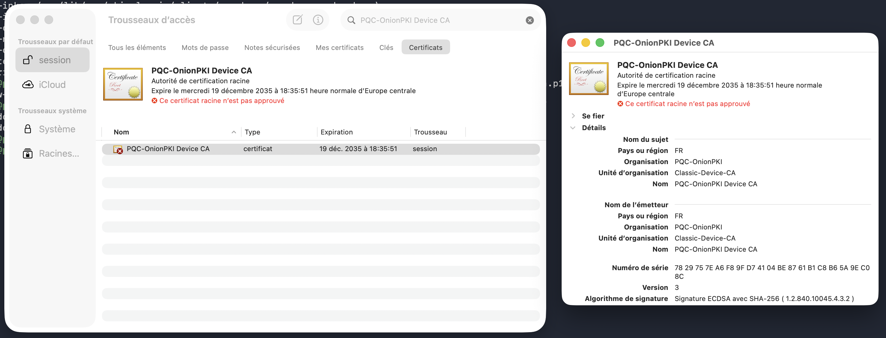

PQC-OnionPKI
Conception et déploiement d’une infrastructure de confiance post-quantique sur Raspberry Pi, durcie et exposée via un service Tor onion. Le projet explore une migration réaliste vers la PQC en combinant une PKI compatible avec l’écosystème actuel et une ML-DSA-65-Signatur appliquée automatiquement aux e-mails au niveau du relais SMTP.
Ziel
Ziel war es, über die reine Demonstration eines Post-Quantum-Algorithmus hinauszugehen und PQC als echten Infrastrukturdienst zu testen: Erzeugung und Schutz von Schlüsseln, Vertrauenskette, Signatur, kontrollierte Netzwerkexposition und Integration in eine bestehende Anwendung.
E-Mail wurde bewusst als anspruchsvoller Anwendungsfall gewählt, um die realen Grenzen von Clients, MTAs und historischen Formaten sichtbar zu machen.
Plattform
- Raspberry Pi 4 als dedizierte Plattform für PKI und Signaturdienst.
- Debian mit SSH-Härtung, UFW/nftables und Fail2ban.
- Administrationszugriff über einen Tor Onion Service ohne direkte öffentliche IP-Exposition.
- Private Schlüssel getrennt von den Anwendungsverzeichnissen und mit restriktiven Berechtigungen.
Vertrauensarchitektur
100 % Post-Quantum-PKI — experimentell
Eine vollständige Kette Root CA → Mail CA → Anwendungszertifikate wurde mit Post-Quantum-Signaturen über OpenSSL-OQS/liboqs erzeugt. Kryptografisch funktioniert sie, zeigt jedoch eine aktuelle Grenze: Die wichtigsten Betriebssysteme und Mail-Clients unterstützen Post-Quantum-X.509-Zertifikate noch nicht nativ.
Hybride PKI — funktionsfähig
La couche de compatibilité reste classique pour les certificats et l’authentification SMTP/TLS, tandis que l’intégrité et l’authenticité du message sont protégées indépendamment par une ML-DSA-65-Signatur. Cette séparation permet de conserver les clients existants sans leur imposer de support PQC natif.
Signaturkette für E-Mails
Le script pqc_sign_mail.py est utilisé comme content_filter Postfix et s’exécute sous un utilisateur non privilégié. La représentation du message est déterministe afin de pouvoir reproduire la Verifikation côté serveur.
Performance auf dem Raspberry Pi
Diese Messungen zeigen, dass Post-Quantum-Signaturen auch auf günstiger ARM-Hardware mit synchroner E-Mail-Verarbeitung vereinbar bleiben.
Erkenntnisse des Projekts
- PQC-X.509-Zertifikate sind weiterhin mit einem großen Teil des heutigen Client-Ökosystems inkompatibel.
- Serverseitig korrekt erzeugte
X-PQC-*-Header können von Gmail, Apple Mail und Outlook entfernt oder verborgen werden. - Der Nachweis muss daher auf System- und Anwendungsebene gedacht werden und nicht nur auf Ebene der kryptografischen Primitive.
- Der Wechsel von einem Header-basierten Nachweis zu einer sichtbaren Darstellung im Inhalt zeigt die Anpassung an reale Integrationsgrenzen.
Spuren des Prototyps





Bewusst verbleibende Grenzen
Der Prototyp konzentriert sich auf text/plain-Nachrichten und versucht nicht, die Grenzen aktueller Clients zu verbergen. Ziel ist gerade, die Lücke zwischen einem kryptografisch gültigen Nachweis und seiner Integration in ein historisch gewachsenes Ökosystem zu dokumentieren.